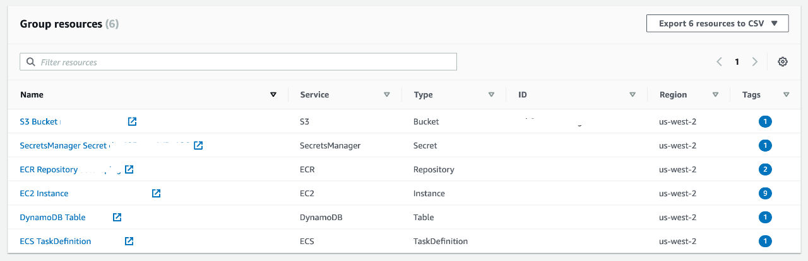

Tag it up!¶
Problem¶
I get it, tagging stuff without a clear benefit is something few folks are willing to do. While AWS introduced Resource Groups and the Tag Editor in 2014, oftentimes tags are not first-class citizens.
While there are good practices for tagging available, it seems that the very act of tagging still is something lots of folks loath. Maybe the benefits of tagging, for example concerning cost control or to simplify access control are not obvious, or maybe it's just too cumbersome?
Let's start with a quick review of the tagging mechanics.
To tag the S3 bucket example with owner=me you'd use the following command:
1 2 3 | |
To tag the Lambda function example with owner=me you'd use the following command:
1 2 3 | |
To tag the ELB example with owner=me you'd use the following command:
1 2 3 | |
We see a pattern here and that is consistency. Or, better say, the lack thereof? Now, if you've been using AWS consoles you might not be overly surprised to find that, but fact is that the inconsistencies are also present in the APIs and by extension the SDKs. One can argue that this is Conway in action, however, there's no need for users to suffer from it.
Solutions¶
For example, using a tool like awsometag allows you to tag AWS resources in a uniform manner. Let's see it in action (using above examples):
1 2 3 4 5 6 | |
Based on tags you can use the resource group service to deal with all the resources tagged in the previous step:

Further reading¶
- Tagging Best Practices
- Automatically Enforcing AWS Resource Tagging Policies
- AWS Naming & Tagging Conventions
- Tagger- AWS tagging tool
Conclusion¶
Tagging doesn't have to be awkward or complicated. And while we likely won't
be able to change (or: fix?) the APIs top-down we can create and/or use tooling
such as awsometag to make working with said APIs less painful.